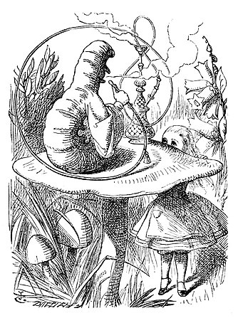

By the time she had caught the flamingo and brought it back, the fight was over, and both the hedgehogs were out of sight: ‘but it doesn't matter much,’ thought Alice, ‘as all the arches are gone from this side of the ground.’ So she tucked it away under her arm, that it might not escape again, and went back for a little more conversation with her friend.
When she got back to the Cheshire Cat, she was surprised to find quite a large crowd collected round it: there was a dispute going on between the executioner, the King, and the Queen, who were all talking at once, while all the rest were quite silent, and looked very uncomfortable.
The moment Alice appeared, she was appealed to by all three to settle the question, and they repeated their arguments to her, though, as they all spoke at once, she found it very hard indeed to make out exactly what they said.
'I should like to have it explained,' said the Mock Turtle.
'She can't explain it,' said the Gryphon hastily. 'Go on with the next verse.'
'But about his toes?' the Mock Turtle persisted. 'How COULD he turn them out with his nose, you know?'
'It's the first position in dancing.' Alice said; but was dreadfully puzzled by the whole thing, and longed to change the subject.
'Go on with the next verse,' the Gryphon repeated impatiently: 'it begins "I passed by his garden."'
Alice did not dare to disobey, though she felt sure it would all come wrong, and she went on in a trembling voice:—
'I passed by his garden, and marked, with one eye, How the Owl and the Panther were sharing a pie—' [later editions continued as follows The Panther took pie-crust, and gravy, and meat, While the Owl had the dish as its share of the treat. When the pie was all finished, the Owl, as a boon, Was kindly permitted to pocket the spoon: While the Panther received knife and fork with a growl, And concluded the banquet—]
'What IS the use of repeating all that stuff,' the Mock Turtle interrupted, 'if you don't explain it as you go on? It's by far the most confusing thing I ever heard!'
'Yes, I think you'd better leave off,' said the Gryphon: and Alice was only too glad to do so.
'Shall we try another figure of the Lobster Quadrille?' the Gryphon went on. 'Or would you like the Mock Turtle to sing you a song?'